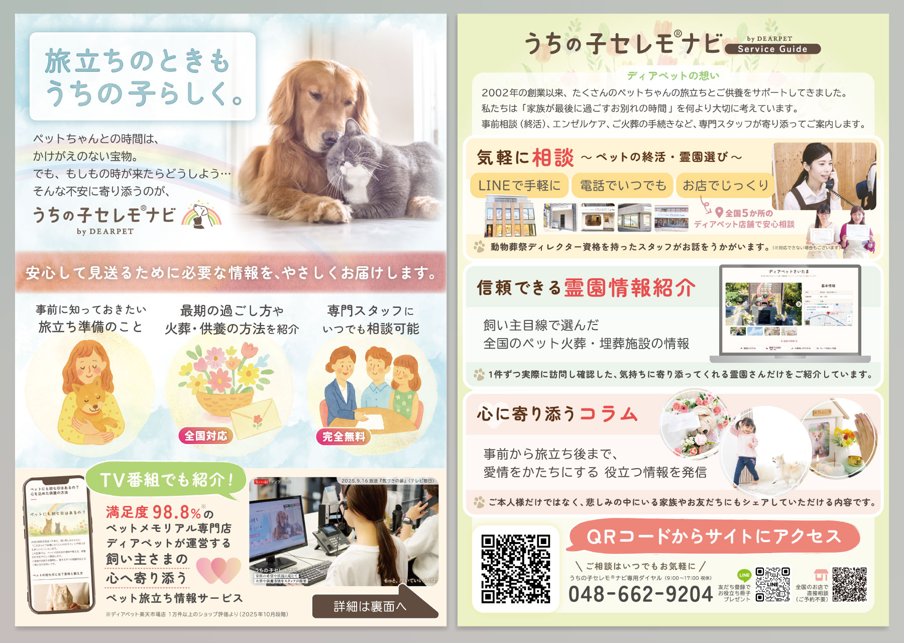
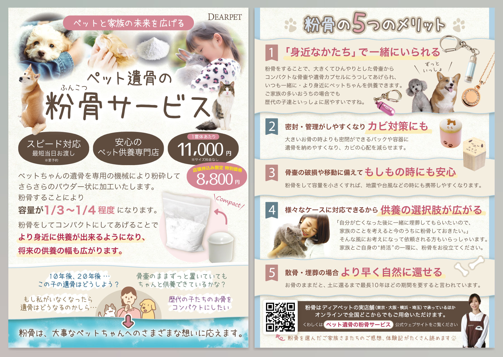
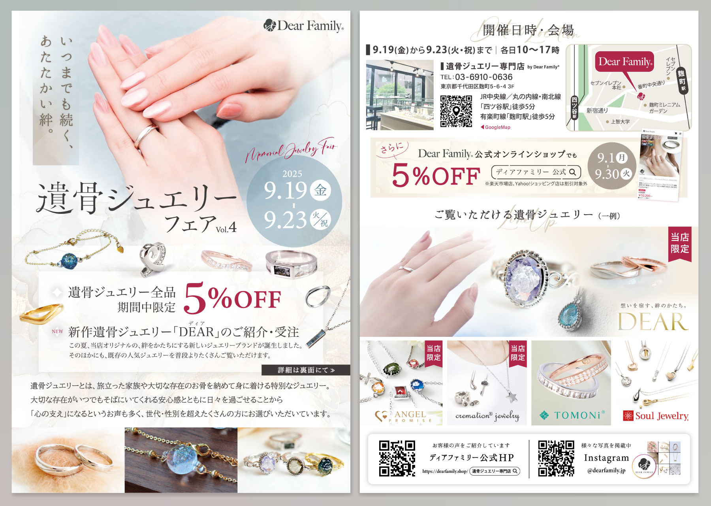
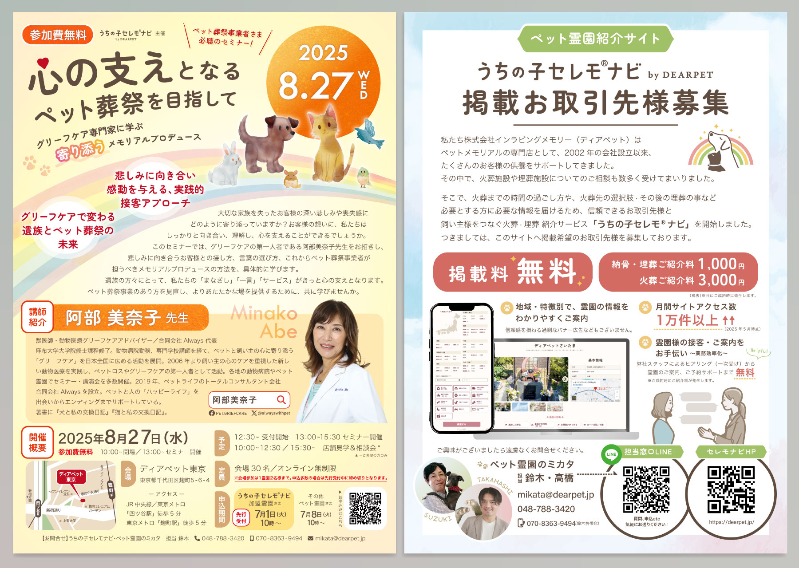
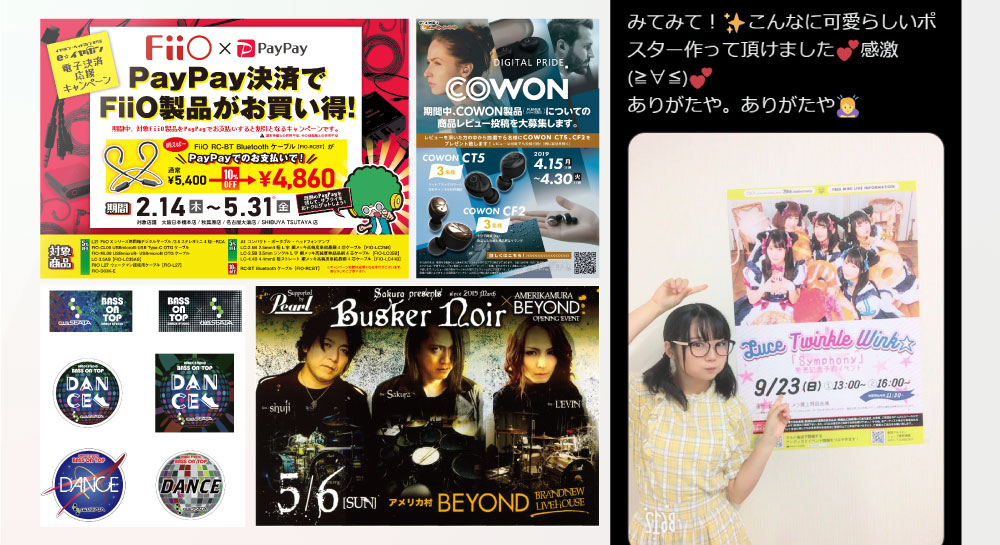
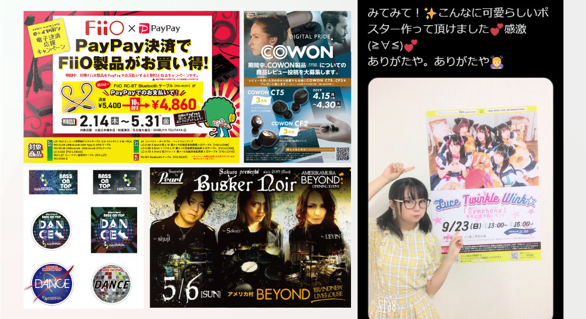

各種印刷物デザイン
印刷物2023～現在 現職では様々な印刷物を手がけました。インハウスデザイナーとして、企画やテキスト考案段階から携わることが多いです。
一部を抜粋し、まとめて掲載いたします。

サービス案内フライヤー（2025年）

サービス案内フライヤー（2023年）

イベントフライヤー（2025年）

営業用イベントフライヤー（2025年）

営業用資料（2024年）

商品同梱パンフ（2024年）
概要
■使用技術
Illustrator、Photoshop
社内外での打ち合わせが必要な案件については、CanvaやFigmaを活用して草案を作成・URL共有するなど工夫し、円滑な合意形成に努めています。
以前（～2019年）に制作したものを以下のページにまとめています。
基本的なスキル感やこれまでの経験や表現の幅を示す資料として参考にしていただければ幸いです。
ページはこちら
※外部URL（Notionまとめページ）にジャンプします。
※外部URL（Notionまとめページ）にジャンプします。